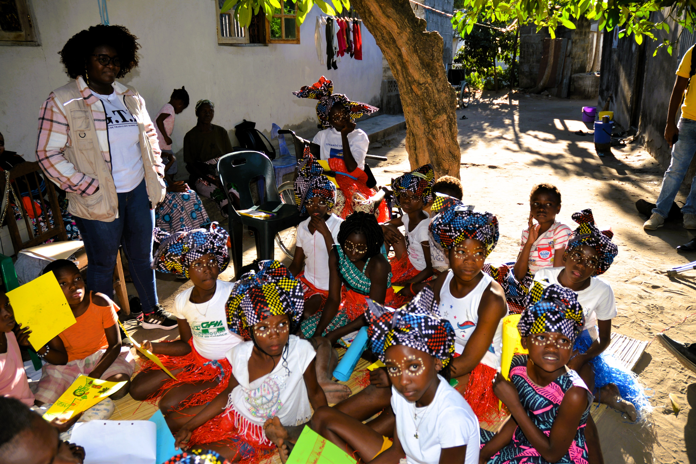

Formação VBG · Dia Um
Estabelecimento de Espaços Seguros

Diagnóstico Comunitário Participativo — mapeamento das necessidades locais, identificação de grupos mais vulneráveis e análise dos riscos específicos para pessoas com deficiência.
Infraestrutura Acessível — critérios mínimos de acessibilidade para um espaço seguro: rampas, sinalização inclusiva, comunicação adaptada, sanitários e mobiliário.
Recrutamento e Perfil das Equipas — critérios de selecção de facilitadores, papéis e responsabilidades, e gestão segura de informação confidencial.